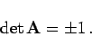

Gilt für eine quadratische Matrix  die Beziehung
die Beziehung
| (4.30) |
d.h., die Skalarprodukte je zweier verschiedener Spalten oder Zeilen sind gleich null und die Skalarprodukte jeder Zeile oder Spalte mit sich selbst gleich eins, dann nennt man sie eine orthogonale Matrix.
Orthogonale Matrizen haben folgende Eigenschaften:
|  | (4.31) |
| Beispiel |
|
Die bei der Drehung eines Koordinatensystems verwendete Drehungsmatrix |